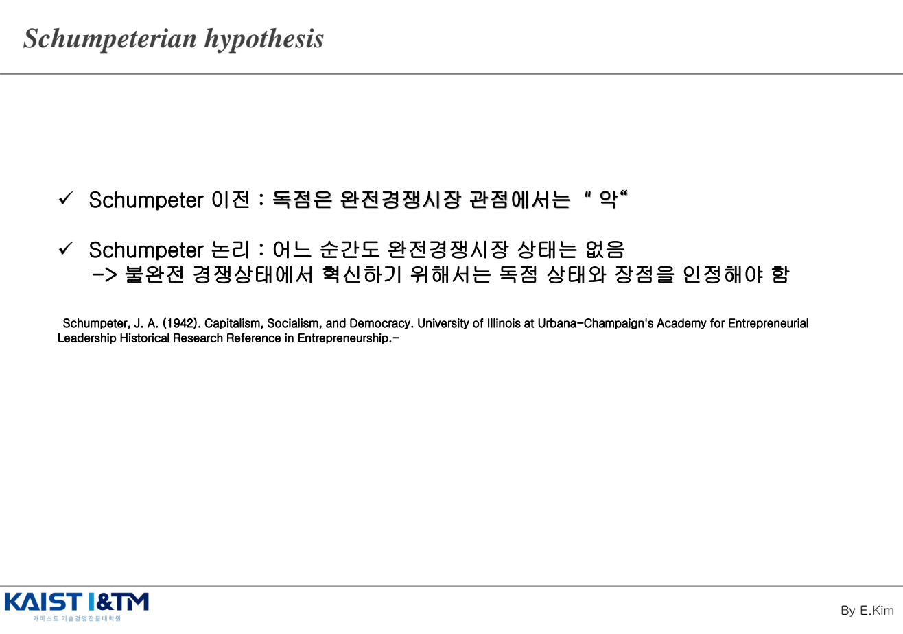
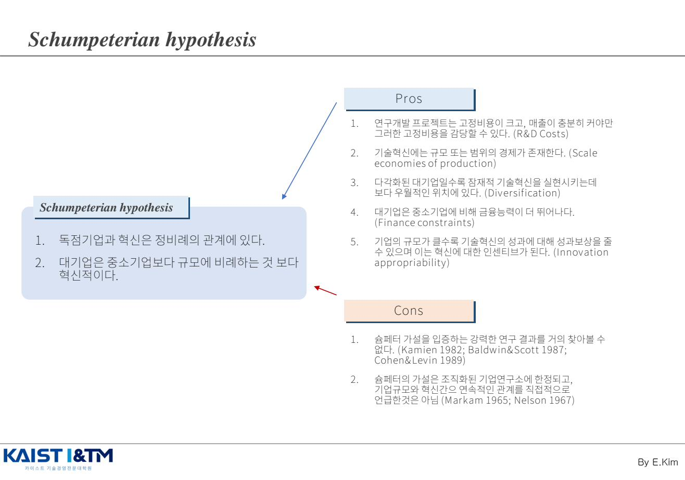
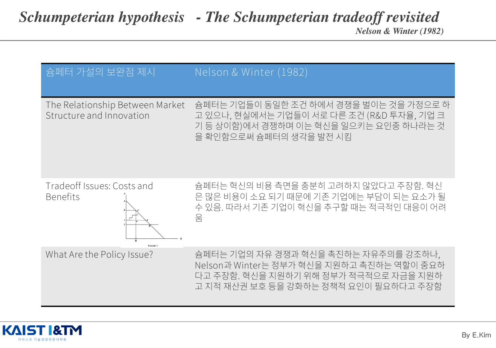
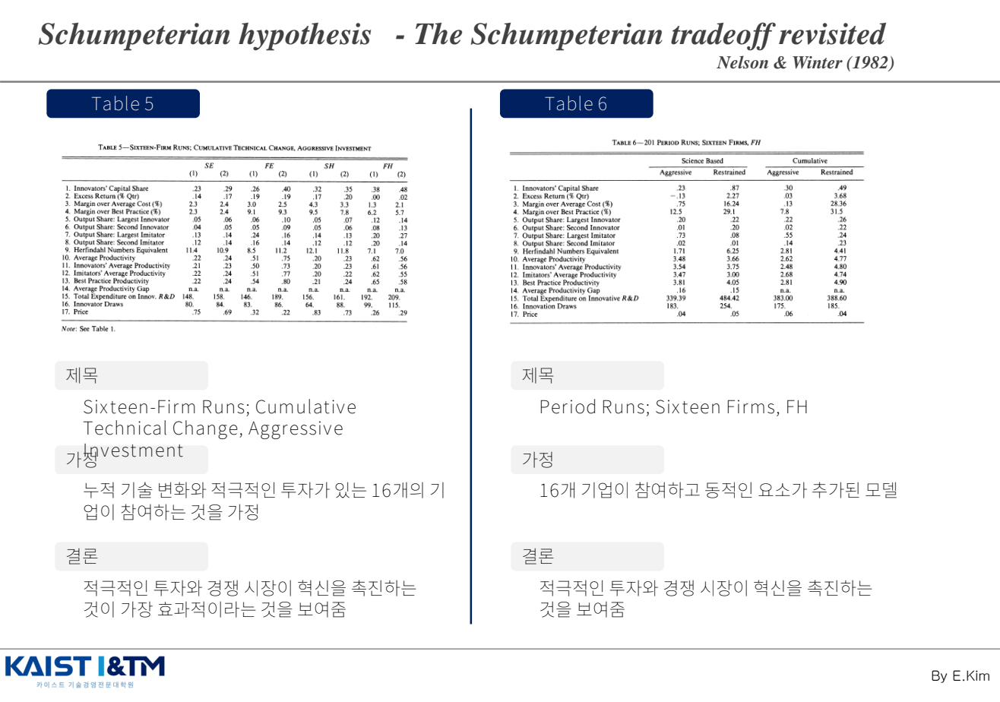
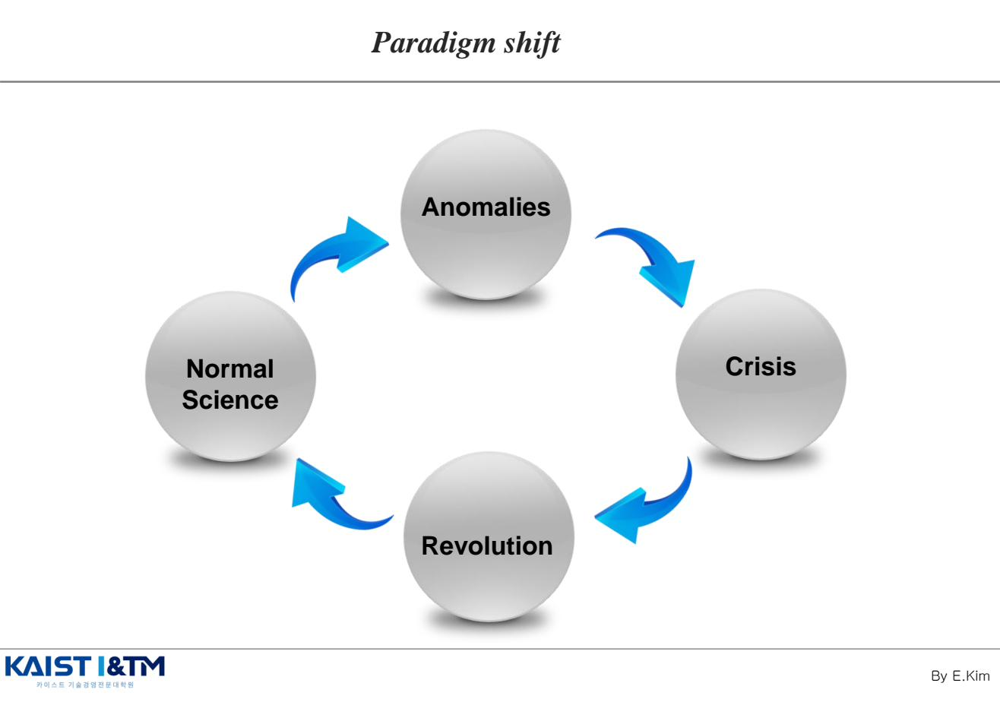
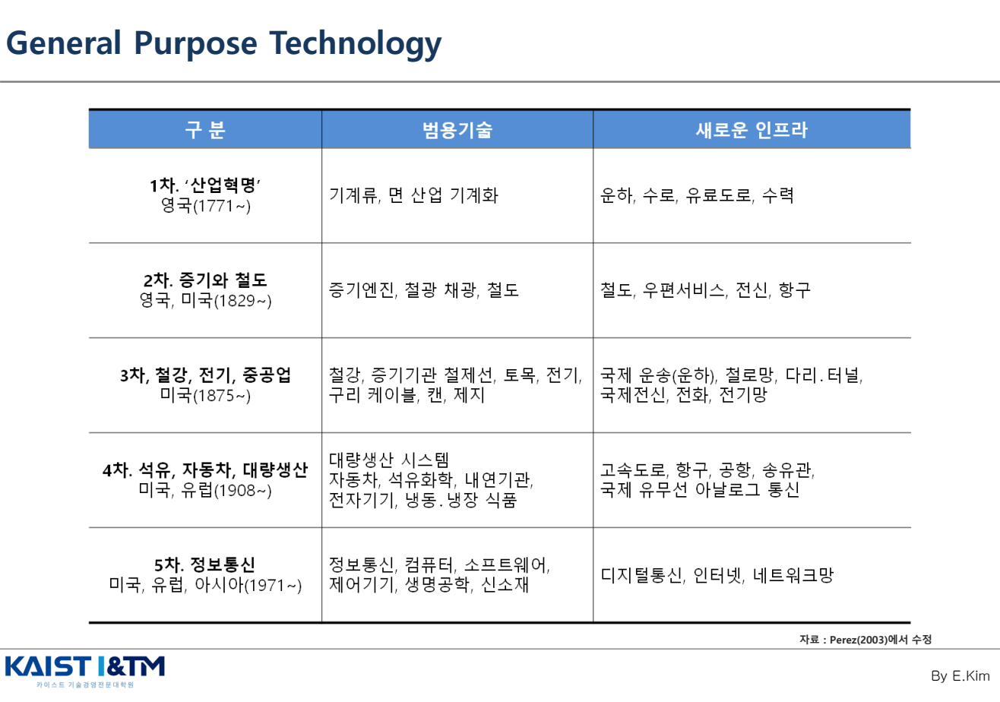
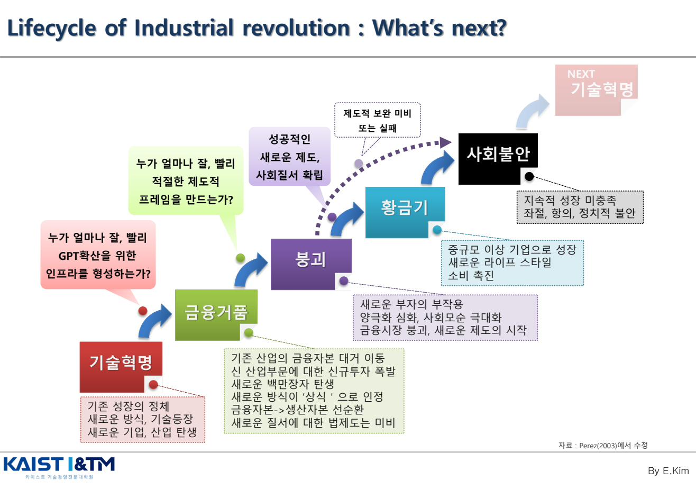
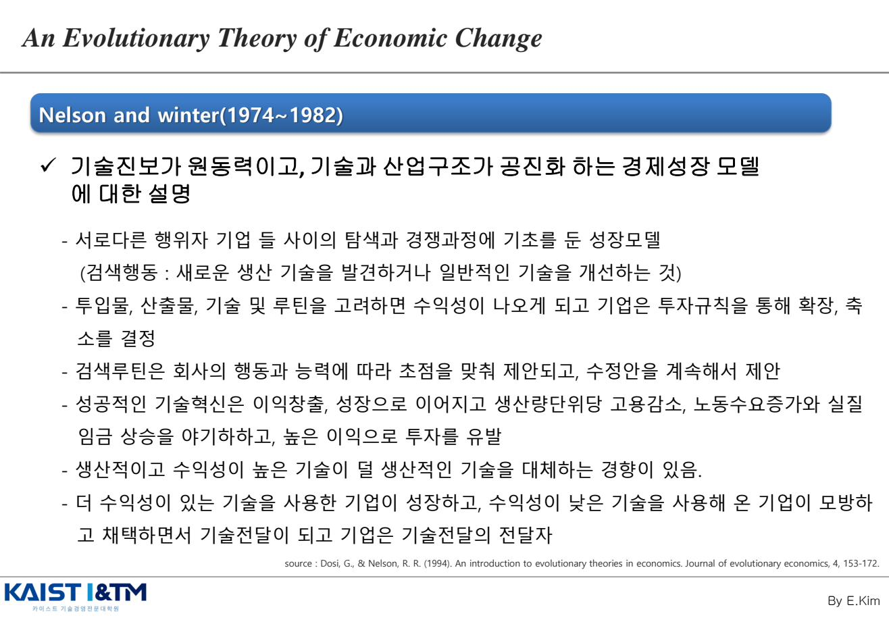

Classics & Evolutionary Theory · 슘페터 가설과 진화경제학
IM01에서 "슘페터가 누구이고, 왜 중요한가"를 큰 그림으로 봤다면, IM02는 그 가설을 한 단계 깊이 들여다본다. 슘페터 가설의 구체적 명제와 찬반 논거, 이를 보완·확장한 Nelson & Winter의 진화경제학, 그리고 혁신을 거시적 관점에서 보는 두 도구 — Kuhn의 패러다임 전환과 범용기술(GPT) · 산업혁명 라이프사이클까지 다룬다.
학습 개요
- 슘페터 가설의 핵심 명제 2가지와 찬반 논거 (Pros 5 / Cons 2)
- Nelson & Winter(1982)의 슘페터 가설 보완: 시뮬레이션 모델 3가지 + 보완점 3가지
- Kuhn의 패러다임 전환 4단계: Normal Science → Anomalies → Crisis → Revolution
- 범용기술(GPT)의 정의와 5차 산업혁명까지의 GPT-인프라 표
- Perez(2003) 산업혁명 라이프사이클: 기술혁명 → 금융거품 → 붕괴 → 황금기 → 사회불안
- Nelson & Winter 진화경제이론: 탐색 · 루틴 · 모방을 통한 기업의 진화
1. 슘페터 가설 (Schumpeterian Hypothesis) EXAM
IM01에서 보았듯이, 슘페터의 사상은 Mark Ⅰ(1912 경제발전론)의 신결합(New Combination)·기업가 정신에서 시작해 Mark Ⅱ(1942 자본주의·사회주의·민주주의)의 창조적 파괴(Creative Destruction로 확장된다. 슘페터 가설은 Mark Ⅱ에서 다루어진다. (* Mark Ⅰ, Ⅱ에 대한 자세한 이야기는 IM01에서 확인할 수 있다.)
1.1 슘페터 가설의 출발점 — 완전경쟁 비판

- 슘페터 이전: 독점은 완전경쟁시장 관점에서 "악(惡)"으로 간주됨
- 슘페터 논리: 어느 순간에도 완전경쟁시장 상태는 존재하지 않음 → 불완전 경쟁 상태에서 혁신하려면 독점의 장점과 전유성을 인정해야 함
- 독점기업은 새로운 개발에 대한 리스크를 극복했기에 전유성(혁신 성과를 배타적으로 가져가는 속성)을 누릴 자격이 있음. 특허제도가 그 대표적 장치다.
1.2 슘페터 가설의 두 명제
- 독점기업과 혁신은 정비례 관계에 있다.
- 대기업은 중소기업보다 규모에 비례하는 것 이상으로 혁신적이다.
다시 말해, "Market power and large firms stimulate innovations" — 시장 지배력과 큰 기업이 혁신을 자극한다.
1.3 찬반 논거 (Pros & Cons)

| Pros (지지 논거 5) | 핵심 키워드 |
|---|---|
| ① 연구개발 프로젝트는 고정비용이 크고, 매출이 충분히 커야만 고정비용을 감당할 수 있다. | R&D Costs |
| ② 기술혁신에는 규모 또는 범위의 경제가 존재한다. | Scale economies |
| ③ 다각화된 대기업일수록 잠재적 기술혁신을 실현하는 데 우월적 위치에 있다. | Diversification |
| ④ 대기업은 중소기업에 비해 금융능력이 더 뛰어나다(기술전략·R&D는 비밀이므로 내부금융 의존). | Finance constraints |
| ⑤ 기업 규모가 클수록 기술혁신 성과에 대한 보상을 줄 수 있어 혁신 인센티브가 된다. | Innovation appropriability |
| Cons (반박 논거 2) | 대표 문헌 |
|---|---|
| ① 슘페터 가설을 입증하는 강력한 연구 결과를 거의 찾아볼 수 없다. | Kamien 1982; Baldwin & Scott 1987; Cohen & Levin 1989 |
| ② 슘페터의 가설은 조직화된 기업연구소에 한정되고, 기업 규모와 혁신 간의 연속적인 관계를 직접적으로 언급한 것은 아님. | Markam 1965; Nelson 1967 |
2. 기술혁신 활동에 영향을 미치는 기업 특성
슘페터 가설을 실증하기 위해 후속 연구들이 "어떤 기업이 더 혁신적인가"를 분석했다. 결과적으로 다음 세 가지가 핵심 요인으로 떠올랐다.
- 기업 규모가 클수록 (R&D 집약도와 기업 규모는 +)
- R&D 규모의 경제 (대규모 실험·인프라 가능)
- 매출액이 클수록 R&D 고정비용을 분산 가능 → R&D 수익률 상승
- 주의: 규모가 클수록 조직 방만·비효율성도 같이 커짐 → R&D 집약도와 기업 규모는 U자형 관계(Cohen 1995). 산업별 차이 존재
- 가설 지지 조건: 기술혁신 활동 증가율 > 기업 규모 증가율인 경우에만
- 내부 금융 능력이 클수록 — 기술전략·R&D는 비밀이므로 내부 금융능력으로 충당해야 함
- 다각화 능력이 클수록 — R&D 결과의 의외성을 모두 감안하여 사업화 가능한 기업
요약 공식
기술혁신 활동(R&D 집약도, 특허 수) = 기업 크기 + 내부금융능력 + 다각화 능력 + …
3. Nelson & Winter (1982) — 슘페터 가설의 보완 EXAM
Nelson과 Winter는 기본적으로 슘페터 가설을 지지한다. 다만 "현실은 슘페터의 가정보다 복잡하다"며 슘페터 가설을 revisit했다. 이들은 시뮬레이션 모델 3가지와 이론적 보완점 3가지를 제시한다.
3.1 슘페터 가설 확장 모델 3가지

| 모델 | 설정과 결과 |
|---|---|
| Behavior and Performance in a Science-Based Oligopoly | 과학기반 산업에서 대규모 기업이 작은 기업을 인수·대체할 수 있는 과학적 지식과 기술력을 보유. 결과: 대기업은 더 많은 이익을 창출, 작은 기업은 시장에서 밀려남. |
| A More Competitive Science-Based Industry | 과학기반 산업에서 경쟁이 더 많은 경우. 기존 대기업이 상대적으로 적은 이익을 내는 상황에서 경쟁사들이 혁신. 결과: 경쟁적 시장에서 더 많은 혁신과 경제성과가 나타남. |
| A Competitive Industry with a Cumulative Technology | 이전 기술의 발전이 새로운 기술의 발전을 촉진하는 누적 기술 환경의 경쟁. 결과: 누적 기술의 발전이 경쟁적 시장에서 혁신을 촉진하고 경제성과를 높임. |
3.2 슘페터 가설의 보완점 3가지

| 보완점 | 핵심 주장 |
|---|---|
| Market Structure와 Innovation의 관계 | 슘페터는 동일 조건 하의 경쟁을 가정했으나, 현실은 R&D 투자율·기업 크기 등이 상이한 조건에서 경쟁. 이 차이 자체가 혁신을 일으키는 요인. |
| Tradeoff Issues — Costs and Benefits | 슘페터는 혁신의 비용 측면을 충분히 고려하지 않음. 혁신은 비용이 많이 들어 기존 기업에는 부담이 됨 → 기존 기업의 혁신 대응이 어려운 경우 존재. |
| Policy Issue | 슘페터는 자유경쟁·자유주의 강조. Nelson & Winter는 정부의 적극적 혁신 지원 역할이 중요하다고 주장 — 자금 지원, 지적재산권 보호 등. |
한 줄 요약
"슘페터는 맞다. 다만 (1) 기업 간 차이를 더 봐야 하고, (2) 혁신 비용도 봐야 하며, (3) 정부 역할도 인정해야 한다." — 슘페터를 기각하는 것이 아니라 보완하는 입장이다.
4. Kuhn의 패러다임 전환 (Paradigm Shift)
Thomas Kuhn(1922~1996)이 The Structure of Scientific Revolutions(1962)에서 제시한 개념. 혁신을 거시적 관점에서 이해하는 데 자주 인용되는 모델이다.

패러다임 전환의 4단계
- Normal Science (정상 과학): 기존 패러다임 안에서 문제를 풀어가는 안정기
- Anomalies (이상 현상, 변칙): 기존 패러다임으로 설명할 수 없는 현상들이 누적
- Crisis (위기): 변칙이 충분히 쌓여 패러다임의 신뢰가 흔들리는 시기
- Revolution (혁명): 새로운 패러다임이 기존 패러다임을 대체
예시: 천동설(Ptolemaic Universe) → 지동설, Newton의 F=ma → Einstein의 상대성 등.
핵심 개념: 공약불가능성 (Incommensurability)
새 패러다임과 기존 패러다임은 같은 척도로 비교할 수 없다는 것. 두 패러다임은 세계를 바라보는 언어 자체가 달라서, "어느 쪽이 더 맞느냐"를 동일 기준으로 평가할 수 없다. 이 개념은 후에 기술 혁신(특히 파괴적 혁신, IM07)에서도 중요하게 변형되어 인용된다.
5. 범용기술 (General Purpose Technology, GPT)
범용기술(GPT)이란, 광범위한 산업에 걸쳐 활용되며 후속 혁신을 촉발하고 경제 전반의 생산성을 끌어올리는 기반 기술을 말한다. 개별 제품 기술이 아니라 인프라처럼 작동하는 기술이다 (Bresnahan & Trajtenberg, 1995).
5차 산업혁명까지의 GPT와 새로운 인프라

| 구분 | 범용기술 | 새로운 인프라 |
|---|---|---|
| 1차 · '산업혁명' 영국(1771~) | 기계류, 면 산업 기계화 | 운하, 수로, 유료도로, 수력 |
| 2차 · 증기와 철도 영국·미국(1829~) | 증기엔진, 철광 채광, 철도 | 철도, 우편서비스, 전신, 항구 |
| 3차 · 철강, 전기, 중공업 미국(1875~) | 철강, 증기기관·철제선, 토목, 전기, 구리 케이블, 캔, 제지 | 국제 운송(운하), 철로망, 다리·터널, 국제전신, 전화, 전기망 |
| 4차 · 석유, 자동차, 대량생산 미국·유럽(1908~) | 대량생산 시스템, 자동차, 석유화학, 내연기관, 전자기기, 냉동·냉장 식품 | 고속도로, 항구, 공항, 송유관, 국제 유무선 아날로그 통신 |
| 5차 · 정보통신 미국·유럽·아시아(1971~) | 정보통신, 컴퓨터, 소프트웨어, 제어기기, 생명공학, 신소재 | 디지털통신, 인터넷, 네트워크망 |
GPT의 핵심 함의
- GPT 확산을 위해서는 새로운 인프라가 반드시 필요하다. GPT 자체로는 확산되지 않는다.
- GPT 그 자체의 수익모델(BM)은 의미가 없다. GPT는 후속 혁신·산업·서비스의 토대일 뿐, GPT를 직접 팔아 돈을 버는 모델은 본질을 놓친 것.
6. Perez의 산업혁명 라이프사이클
Carlotta Perez는 산업혁명이 어떻게 시작되고 끝나는지를 5단계 라이프사이클로 설명한다. 새 GPT가 등장한 후 사회·제도가 그것을 어떻게 받아들이느냐에 따라 다음 단계가 갈린다.

5단계의 흐름
- 기술혁명 (Technological Revolution): 기존 성장의 정체 → 새로운 방식·기술 등장 → 새로운 기업·산업 탄생
- 금융거품 (Financial Bubble): 기존 산업의 금융자본이 신산업으로 대거 이동, 신규투자 폭발, 새로운 백만장자 탄생. 새로운 질서에 대한 법제도는 미비한 상태.
- 붕괴 (Crash): 새로운 부자의 부작용, 양극화 심화, 사회모순 극대화, 금융시장 붕괴 → 새로운 제도의 시작점
- 황금기 (Golden Age): "성공적인 새로운 제도와 사회질서가 확립"되면 등장. 중규모 이상 기업으로 성장, 새로운 라이프스타일, 소비 촉진
- 사회불안 (Social Unrest): 황금기의 지속적 성장이 미충족 → 좌절·항의·정치적 불안 → 다음 기술혁명을 부름
핵심 질문 (Perez가 던지는 정책 질문)
- "누가 얼마나 잘, 빨리 GPT 확산을 위한 인프라를 형성하는가?" — 금융거품 단계의 갈림길
- "누가 얼마나 잘, 빨리 적절한 제도적 프레임을 만드는가?" — 붕괴 → 황금기로 가는 갈림길
- 제도적 보완에 실패하면 황금기로 못 가고 사회불안으로 직행
7. 진화경제이론 (An Evolutionary Theory of Economic Change)
Nelson & Winter(1974~1982)가 정립한 이론. "경제는 경제역학(mechanics)이 아니라 경제 생물학(biology)에 있다"(Marshall, 1948). 즉, 균형이 아니라 변이·선택·재생산이라는 진화적 관점으로 경제를 본다.

진화경제이론의 핵심 명제
- 기술 진보가 원동력이고, 기술과 산업구조가 공진화(co-evolution)하는 경제성장 모델
- 서로 다른 행위자(기업)들 사이의 탐색(search)과 경쟁 과정에 기초를 둔 성장모델
- 검색 행동: 새로운 생산 기술을 발견하거나 일반적인 기술을 개선하는 것
- 투입물·산출물·기술·루틴(routine)을 고려하면 수익성이 나오고, 기업은 투자 규칙에 따라 확장·축소를 결정
- 검색 루틴은 회사의 행동과 능력에 따라 초점이 맞춰지고, 수정안을 계속 제안
- 성공적 기술혁신은 이익 창출·성장 → 단위 생산량당 고용 감소, 노동수요 증가와 실질 임금 상승 야기 → 높은 이익으로 투자를 유발
- 생산적이고 수익성 높은 기술이 덜 생산적인 기술을 대체하는 경향
- 수익성 높은 기술을 쓴 기업이 성장하고, 수익성 낮은 기술 기업은 모방·채택하면서 기술 전달의 매개자(carrier)가 됨
기업은 루틴(routine)이라는 유전자를 가진 유기체와 같다. 환경 변화에 따라 탐색으로 변이를 만들고, 시장의 선택을 통해 살아남은 루틴이 재생산된다. 이것이 경제의 진화다.
예상 문제 매칭
📌 슘페터 가설
"슘페터 가설을 정의하고, 이를 지지하는 논거와 반박하는 논거를 각각 서술하시오."
답안 핵심:
- 완전경쟁시장 가정 비판 → 불완전 경쟁에서 혁신을 위해 독점·전유성 인정해야 함
- 두 명제: (1) 독점기업과 혁신은 정비례, (2) 대기업이 중소기업보다 규모 이상으로 혁신적
- Pros 5가지: R&D 고정비용, 규모의 경제, 다각화, 금융능력, 인센티브
- Cons 2가지: 실증 약함, 기업연구소 한정
📌 Nelson & Winter의 슘페터 가설 보완
"Nelson & Winter가 슘페터 가설에 대해 제시한 보완점 3가지를 설명하시오."
답안 핵심:
- 슘페터 가설을 지지하되 revisit한 입장
- ① 시장구조-혁신 관계: 기업 간 R&D 투자율·규모 차이가 혁신의 요인
- ② 혁신의 비용 측면: 기존 기업에게 혁신 비용은 부담 → 적극 대응 어려움
- ③ 정책 이슈: 정부의 자금 지원·IPR 보호 등 적극적 역할 필요
📌 진화경제이론
"Nelson & Winter의 진화경제이론을 설명하고, 슘페터 이론과의 차이를 서술하시오."
답안 핵심:
- 핵심 비유: 경제는 역학이 아니라 생물학
- 핵심 메커니즘: 탐색(search) · 루틴(routine) · 모방·선택
- 기술과 산업구조의 공진화
- 슘페터와의 차이: 슘페터의 정태적·이분법적(독점 vs 경쟁)에서 벗어나 기업 간 이질성과 누적적 학습을 강조
📌 범용기술(GPT)과 산업혁명 라이프사이클
"범용기술(GPT)의 특성을 설명하고, Perez의 산업혁명 라이프사이클 5단계를 서술하시오." 또는 "현재 AI를 GPT 관점에서 분석하시오."
답안 핵심:
- GPT 정의: 광범위 산업에 적용 + 후속 혁신 촉발 + 인프라적 성격
- 5차 산업혁명 표 인출 (증기·철도, 전기·중공업, 석유·자동차, 정보통신)
- 핵심 함의: ① GPT 확산은 인프라 필요, ② GPT 자체의 BM은 의미 없음
- Perez 5단계: 기술혁명 → 금융거품 → 붕괴 → 황금기 → 사회불안
- 핵심 갈림길: 인프라 형성 속도 + 제도적 프레임 정착 여부
📌 패러다임 전환
"Kuhn의 패러다임 전환 4단계를 설명하고, 혁신 연구에서 이 개념이 갖는 의의를 서술하시오."
답안 핵심: Normal Science → Anomalies → Crisis → Revolution. 공약불가능성이 핵심. 파괴적 혁신(IM07)에서 변형 인용.
※ 이 페이지의 모든 그림은 강의자료 IM02_Classics_Evolutionary_Theory.pdf에서 발췌한 것이며, 학습 목적으로만 사용된다.